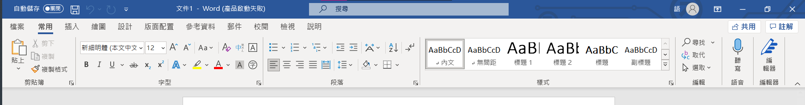
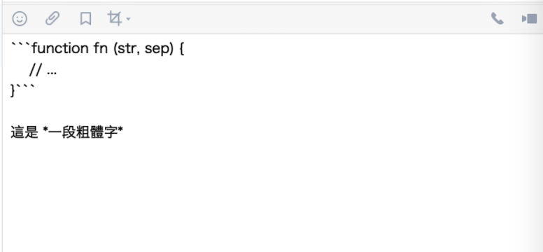

筆者有一些資工相關的背景
不過儘管如此 就算架了一個blog
也不是真的每次都很閒真的去寫一個新的網頁來增加新內容
我個人是使用hexo模板架blog
而其中在新增新的貼文時
不用真的用html去刻一個網頁
而是使用一個格式去編寫
再讓模板幫我渲染成我要的樣子
這次不是要講模板渲染的原理之類的
而是要著重講解那個格式
這個 就是我們這次要講的 - Markdown格式
Markdown格式簡介
本文預設前提
- 會用電腦
- 會打字
- 本篇好像都沒什麼專業的東西(躲
- (非必須)建議略懂Html會比較容易理解
什麼是Markdown呢
Markdown格式是目前非常普遍用來撰寫文檔的語言
原本就是設計來讓使用者專注於文字上
一開始就定位在一個可以用”純文字”搞定的編寫格式
不需使用Word或其他的額外工具進行編輯
例如Word 我們可以透過上面那排工具列
去人性化的設定我們要的格式和編排
例如標題、列表、粗體、斜體

只是這樣有個缺點
就是Word文件一定要開啟Word去瀏覽和編輯
一旦沒有安裝Word文件就等於沒用了
可是Markdown格式不是
只是要存成.md格式即可當成普通的文字檔編輯
這樣一來 使用者只要透過一些簡單的符號和格式
就可以部分取代原本圖形化介面弄出來的文件
進而達成我們要的顯示效果
如何使用Markdown
Markdown格式有個很基本的概念
就是Markdown格式是可以對應HTML的
這是一個非常重要的原則
也就是說Markdown這鬼東西是可以套用Html的概念的
甚至可以直接在裡面寫Html是沒問題的喔
區塊
這不是一個語法 而是一個概念
這個方式會讓你的文字內容變成一塊一塊的
區塊內都能夠共用同一個格式設定
標題、引用或是清單啊 都屬於這個種類
注意 : 區塊是可以疊加使用的
例如引用裡面可以再包標題
標題
標題 顧名思義就是標題
他能讓你一目了然這一個part是在幹嘛的
總共分為6個等級 對應成html為<h1>~<h6>
使用方式也很簡單 就是塞一堆”#”號
數量越多等級越高 反之就越低 最多6個
1 | # 標題1 |
段落
段落就是給你放內文的地方 全名叫文字段落
當你沒有加上任何標籤和符號時
那個區塊的文字就自己會是文字段落
1 | # 標題 |
引用
引用就像是回復訊息
常用在於想要補充或強調某一段內容
就像要回復那段訊息繼續說明一樣
1 | # 標題 |
這是在blog上實際看到引用的效果
注意 : 部分Markdown環境不能在引用再額外包著區塊
只能單獨使用引用
清單
清單分為一般列表及包含數字符號的列表
都可以包含多個層級
只要加上一個縮排或兩個空格就可以新增一個層級
符號可以用這幾種
而只要縮排即可建立子清單
1 | * 這是清單 |
數字也是一樣的 值得注意的是
數字清單並不需要按照順序
1 | 1. 清單1 |
實際打在Blog上長這樣
- 哈哈一號
- 哈哈二號
- 哈哈三號
程式碼
假如是像筆者一樣的程式學習者
或者是專業的開發人員
用到程式碼可以說是家常便飯
至於做為一個許多開發者撰寫文件的工具
Markdown格式能夠插入程式碼說實在也挺合理的
呈現出來的結果長這樣
1 | print("Hello Motherfucker") |
表格
Markdown格式也有提供表格功能
雖然筆者覺得有點不方便使用
因此建議可以和html的
1 | | thead 1 | thrad 2 | thread 3 | |
使用起來像這樣
| thead 1 | thrad 2 | thread 3 |
|---|---|---|
| td | td | td |
行內元素
不同於區塊 套用這個格式可以直接插於各個區塊內
例如 : 強調、斜體、連結、圖片等等
斜體
顧名思義 就是斜體字
使用很簡單 在要斜體的字句前後”各”加上一個*
1 | *我想要讓他變斜* |
強調
實際上就是粗體字
使用很簡單 在要斜體的字句前後”各”加上兩個*
1 | **我想要讓他變斜** |
行內程式碼
跟剛才的程式碼一樣
只是這次不會一次佔一個區塊了
可以直接插入在字句當中
1 | `<h1>`在Html中是第一號的標題標籤 |
實際使用長這樣
<h1>在Html中是第一號的標題標籤
如果不這個做的話 <h1>不只不會被強調
甚至會被瀏覽器渲染為html標籤
被判斷進去 就會出錯
連結和圖片
連結和圖片使用有點近似
差別在於開頭有沒有一個”!”
1 | //這是圖片 |
實際使用的話 圖片會像這樣
連結的話可以像這樣
“像這樣”就是我們要顯示的內容 點了可以進到連結的網址
當我不想使用格式卻跑出來了
Markdown格式使用多了
有人可能會發現
咦? 我在打某些內容時 會需要使用一些符號
但這些符號卻自己被判定成Markdown格式了
這時候怎麼辦呢
其實挺簡單的 不管是寫html甚至其他程式語言都有這個問題
這時候我們會需要使用和跳脫字元一樣的做法
在要打的符號和標籤前面加上反斜線\
1 | \<h1>是在Html中是第一號的標題標籤 |
顯示出來就會原封不動的讓他顯示出來啦
結果如下:
<h1>是在Html中是第一號的標題標籤
#的英文叫做hashtag
常見的應用
目前會比較常看到Markdown格式的地方
大部分會是比較偏向跟程式語言相關的文檔
因為程式語言也是使用純文字去編寫
使用Markdown格式特性是一致的
例如 平常我們在逛github時
通常會看到一個使用markdown的readme.md檔案
作為該專案的介紹或文檔
當然 不只在程式開發上面
Markdown可以應用在很多日常會用到的內容上
例如筆記工具、文字通訊、Blog等等
都有不少程式已經跟進支援Markdown格式的使用
增進使用的效率和方便性
例如 Hackmd是一個方便的網頁筆記工具
他的編寫就是預設使用Markdown格式完成的
可以很方便的排版和設計自己的文件
這個網站還有一點很方便 他能自動提示你你想要完成的格式
也可以幫你分類筆記、做成簡報模式
更能設定編輯權限 開放給朋友一同編輯或觀賞
是筆者個人很喜歡的一款筆記工具(趁機安利一波)
筆者現在使用的Hexo模板
就是一款讓你只需要編寫Markdown就可以產生blog的工具
讓你不需要真的去刻Html就可以很方便的擁有自己的網站
除了上述本來就是寫Markdown的程式和網站外
像我們常用的FB、Line以及discord也都有部分支援Markdown格式
Line就可以使用Markdown格式讓訊息不只是一行一行單調的文字
能夠用來傳遞不同的格式甚至是程式碼

FB也能夠在部分功能使用Markdown格式
例如FB底下的messenger就能夠使用這個功能
無論是FB主網頁或者應用程式和手機全部都不行
或者在FB社團也允許用markdown格式去進行發文
當中筆者覺得Markdown文字訊息功能最完善的程式
就是玩遊戲時常使用的通訊軟體 - discord
同樣也能很能傳送markdown格式文字
更方便的是他會有預覽 讓你知道自己打了三小
結語
這篇只簡單介紹了一下Markdown和其語法
其實還有更多關於md的使用技巧
不過本篇就不多做說明
除了不一定每個人都會使用到再者就是筆者其實也不一定會用
總之 有興趣再自己多加研究吧